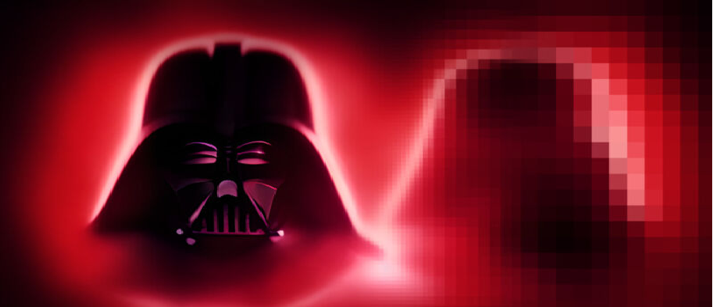

Em 2003, o American Film Institute listou Vader como o terceiro maior vilão da história do cinema em 100 Anos... 100 Heróis e Vilões da AFI, atrás de Hannibal Lecter e Norman Bates.Seu papel como um herói trágico na saga também recebeu críticas positivas.Contrariamente, em 1977, um escritor do New Journal and Guide criticou a falta de diversidade racial no filme original de Star Wars, apontando que "a força do mal ... está vestida de preto e tem a voz de um homem negro".George Lucas se sentiu magoado com tais acusações.
Muitos filmes e séries de televisão prestaram homenagem a Darth Vader. O filme Cosmic Princess de 1982, compilado de episódios da série televisiva Space: 1999, contém várias referências de Star Wars, incluindo um personagem chamado "Vader".Marty McFly em De Volta para o Futuro (1985), vestido com um traje anti-radiação, chama a si mesmo de "Darth Vader do planeta Vulcano" em uma cena. Vader é parodiado como "Dark Helmet" (Rick Moranis) na paródia de Star Wars Spaceballs (1987). Um antagonista principal em Final Fantasy IV (1991) foi declarado pelo criador do jogo Takashi Tokita como sendo baseado em Vader.Em Chasing Amy (1997), Hooper X (Dwight Ewell) fala em uma convenção de quadrinhos sobre Darth Vader ser uma metáfora de quão mal o gênero de ficção científica trata os negros; ele está especialmente ofendido que Vader, o "irmão mais negro da galáxia", se revela um "velho homem branco fraco e duro" no final de O Retorno de Jedi. Vader, especialmente seu papel como pai, é parodiado como Imperador Zurg em Toy Story 2
O besouro do fungo Agathidium vaderi recebeu o nome de Vader,assim como o piolho Ricinus vaderi.Vários edifícios em todo o mundo possuem nomes inspirados no personagem.Um grotesco de Darth Vader paira sobre a face leste da torre noroeste da Catedral Nacional de Washington.Durante a temporada 2007-08 da NHL, o goleiro do Ottawa Senators, Martin Gerber, teve um desempenho tão bom enqunato vestia uma máscara preta que os fãs carinhosamente o chamaram de "Darth Gerber"
O Fedayeen Saddam, uma organização paramilitar iraquiana, recebeu capacetes de fibra de vidro no estilo Darth Vader de 1995, aparentemente por instigação de seu comandante, Uday Hussein, que dizia ser um ávido fã de Star Wars. Vários deles foram trazidos para os Estados Unidos e o Reino Unido como lembranças após a invasão do Iraque em 2003.